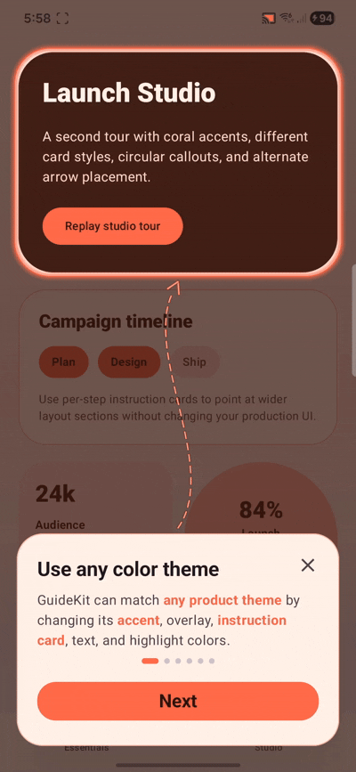
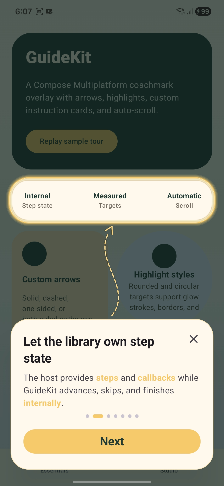
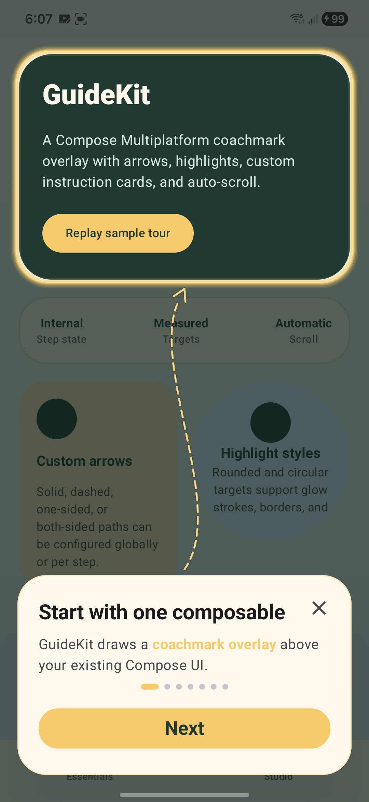
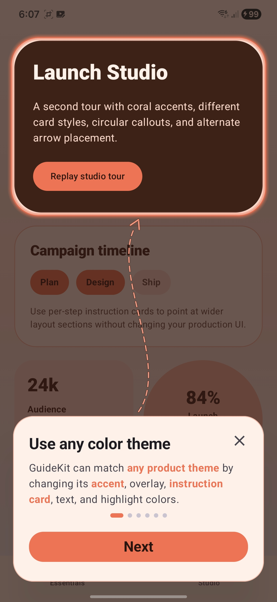

kotlin {
sourceSets {
commonMain.dependencies {
implementation("io.github.tharukack:guidekit:1.1.0")
}
}
}
Available on Maven Central
Guide users.
Guide users.
Highlight what matters.
Beautiful, customizable coach marks and product tours for Compose Multiplatform. Designed to feel native, polished, and easy to maintain.
implementation("io.github.tharukack:guidekit:1.1.0")
- ✓ Android
- ✓ iOS
- ✓ MIT licensed
SpotlightAny UI element
Smart arrowsCurved or direct
Step throughComplete product tours
Cross-platformAndroid & iOS
See it in motion
Guidance that feels part of your app.
GuideKit renders above your existing Compose UI. Your screens stay intact while targets, arrows, and instruction cards work together.
01
Direct attention without interrupting the experience.
Highlight a card, a button, an avatar, or any measured composable. GuideKit handles the overlay while your app keeps control of content and completion.

Real sample flows
One API, distinct product experiences.
GuideKit keeps each target, instruction card, arrow, and theme consistent with the Compose screen underneath it.



Installation
Add one dependency to shared Compose UI.
GuideKit is published on Maven Central. Add it to the source set that renders your tours.
Quick start
Your first guide in three clear steps.
GuideKit belongs beside the content in the main composable that occupies the full screen. A Scaffold is optional and does not change the setup.
01
Keep state in the parent screen
Own each target's measured bounds at the full-screen level. This example uses saveable visibility; use DataStore, a database, or any persistence you prefer to stop completed guides appearing again.
var targetBounds by remember { mutableStateOf<Rect?>(null) }
var showGuide by rememberSaveable { mutableStateOf(true) }02
Measure the real target
Pass a bounds callback into the nested composable. Attach onGloballyPositioned to the exact component being highlighted, then send its boundsInRoot() value back to the parent.
@Composable
fun MainScreenContent(
onTargetBoundsChanged: (Rect?) -> Unit,
) {
Button(
onClick = { /* action */ },
modifier = Modifier.onGloballyPositioned { coordinates ->
onTargetBoundsChanged(coordinates.boundsInRoot())
},
) { Text("Create item") }
}03
Render GuideKit after the content
Pass the callback into the child and render GuideKit after the screen content in the same full-size parent. This ensures the overlay draws above the entire screen.
@Composable
fun MainScreen() {
var targetBounds by remember { mutableStateOf<Rect?>(null) }
var showGuide by rememberSaveable { mutableStateOf(true) }
Box(Modifier.fillMaxSize()) {
MainScreenContent(
onTargetBoundsChanged = { targetBounds = it },
)
if (showGuide) {
GuideKit(
steps = listOf(
GuideKitStep(
targetBounds = targetBounds,
title = "Create your first item",
description = "Tap here to start a new workflow.",
arrowConfigOverride = GuideKitArrowConfigOverride(
from = GuideKitAnchor.TopRight,
to = GuideKitAnchor.BottomCenter,
),
),
),
onSkipped = { showGuide = false },
onFinished = { showGuide = false },
modifier = Modifier.fillMaxSize(),
)
}
}
}Nested target? Keep it where it belongs. Send targetBounds from that component to the full-screen parent through a callback such as onTargetBoundsChanged.
Customization
Start global. Get precise per step.
Set a consistent tour style once, then override only the exact arrow, highlight, or instruction-card properties a step needs.
Add multiple steps
Add one GuideKitStep per target. The list order is the tour order; GuideKit handles next, previous, and finish navigation.
val guideSteps = listOf(
GuideKitStep(
targetBounds = createButtonBounds,
title = "Create your first item",
description = "Tap here to start a new workflow.",
arrowConfigOverride = GuideKitArrowConfigOverride(
from = GuideKitAnchor.TopRight,
to = GuideKitAnchor.BottomCenter,
),
),
GuideKitStep(
targetBounds = activityCardBounds,
title = "Track your progress",
description = "Your latest activity appears here.",
arrowConfigOverride = GuideKitArrowConfigOverride(
from = GuideKitAnchor.BottomLeft,
to = GuideKitAnchor.TopCenter,
),
),
GuideKitStep(
targetBounds = profileButtonBounds,
title = "Make it yours",
description = "Customize your experience here.",
arrowConfigOverride = GuideKitArrowConfigOverride(
from = GuideKitAnchor.TopRight,
to = GuideKitAnchor.CenterLeft,
),
),
)Global and step-specific styles
GuideKitStyle supplies tour-wide defaults. Step override objects change only their explicitly supplied properties, so unrelated global colors, shapes, strokes, padding, and shadows remain intact.
Global style
val style = GuideKitStyle(
accentColor = Color(0xFF7C4DFF),
overlayColor = Color.Black.copy(alpha = 0.72f),
arrowConfig = GuideKitArrowConfig(
lineStyle = GuideKitArrowLineStyle.SpacedDash,
),
targetHighlight = GuideKitTargetHighlightStyle(
shape = GuideKitTargetHighlightShape.RoundedRect,
),
)Step override
GuideKitStep(
targetBounds = avatarBounds,
title = "Your profile",
description = "Manage it here.",
arrowConfigOverride = GuideKitArrowConfigOverride(
lineStyle = GuideKitArrowLineStyle.Solid,
),
targetHighlightOverride = GuideKitTargetHighlightStyleOverride(
shape = GuideKitTargetHighlightShape.Circle,
),
)Library defaults→Global GuideKitStyle→Explicit step overrides
Ordinary override properties default to null, which means inherit. When null is intentional, such as removing a global border, use borderOverride = GuideKitOverride.Value(null).
Step text
Highlight one or many exact phrases with a single API. If no button label is supplied, GuideKit uses Next and changes the final step to Got it.
GuideKitStep(
targetBounds = activityBounds,
title = "Never miss an update",
description = "Important activity and urgent alerts appear here.",
descriptionHighlights = listOf("Important activity", "urgent alerts"),
primaryButtonText = "Continue",
)Arrows
from is the connection point on the instruction card; to is the connection point on the highlighted target. Choose any of nine anchors, deterministic curves, layered strokes, arrowheads, and named line styles.
TopLeftTopCenterTopRightCenterLeftCenterCenterRightBottomLeftBottomCenterBottomRight
Solid
SpacedDash
Dotted
ShortDash
MediumDash
LongDash
DashDot
GuideKitArrowConfigOverride(
from = GuideKitAnchor.TopRight,
to = GuideKitAnchor.CenterLeft,
curveSeed = 3,
lineStyle = GuideKitArrowLineStyle.MediumDash,
arrowHead = GuideKitArrowHead.BothSides,
arrowHeadLength = 38,
arrowHeadAngleDegrees = 30,
strokes = listOf(
GuideKitArrowStroke(width = 9, color = Color.Black.copy(alpha = 0.22f)),
GuideKitArrowStroke(width = 5, color = Color(0xFF7C4DFF)),
),
)Target highlights
Use a rounded rectangle for cards and controls or a circle for avatars, icons, and floating action buttons. Customize cutout, integer padding and stroke widths, corner radius, layered glow, and borders.
Weekly progress12 tasks completed
+18%
RoundedRect
MC
Maya Chen
Product designer
Circle
GuideKitTargetHighlightStyleOverride(
shape = GuideKitTargetHighlightShape.Circle,
padding = 16,
glowStrokes = listOf(
GuideKitTargetHighlightStroke(width = 30, alpha = 0.14f),
GuideKitTargetHighlightStroke(width = 8, alpha = 0.55f),
),
borderWidth = 3,
)Instruction cards
Control alignment, outer and inner padding, constraints, shape, colors, border, Material elevation, and the optional custom shadow globally or per step.
GuideKitInstructionBoxStyleOverride(
alignment = Alignment.BottomCenter,
outerPadding = PaddingValues(20.dp),
contentPadding = PaddingValues(horizontal = 24.dp, vertical = 20.dp),
fillMaxWidth = false,
maxWidth = 420.dp,
shape = RoundedCornerShape(28.dp),
containerColor = Color(0xFF17132B),
contentColor = Color.White,
shadow = GuideKitInstructionBoxShadow(elevation = 32.dp),
)Automatic scrolling
Auto-scroll is enabled per step by default. Supply onScrollBy so GuideKit can ask the host scroll state to keep the target visible and clear of the instruction card.
GuideKit(
steps = guideSteps,
onScrollBy = { deltaPx -> scrollState.animateScrollBy(deltaPx) },
onFinished = { showGuide = false },
)
// Fixed target, such as a floating action button:
GuideKitAutoScrollConfig(enabled = false)Navigation and callbacks
Choose the starting step, toggle progress, observe step changes, and persist skipped or completed tours. Swiping the card right returns to the previous step.
GuideKit(
steps = guideSteps,
initialStepIndex = 0,
showStepIndicator = true,
onStepChanged = { index -> analytics.track("guide_step_${index + 1}") },
onSkipped = {
showGuide = false
onboardingStore.markGuideCompleted()
},
onFinished = {
showGuide = false
onboardingStore.markGuideCompleted()
},
)API reference
Every public option and its default.
A compact reference for the current 1.1.0 API. Open only the group you need.
GuideKitOverlay, navigation, and lifecycle9 options
| Option | Default | Purpose |
|---|---|---|
steps | Required | Ordered guide steps; an empty list renders nothing. |
modifier | Modifier | Use fillMaxSize() at screen level. |
initialStepIndex | 0 | Starting step; safely clamped. |
showStepIndicator | true | Shows progress dots. |
style | GuideKitStyle() | Global visual defaults. |
onStepChanged | {} | Reports the zero-based active index. |
onScrollBy | { 0f } | Delegates scrolling to the host. |
onSkipped | null | When provided, shows close and handles skip. |
onFinished | Required | Runs after the final primary action. |
GuideKitStepContent and per-step overrides10 options
| Option | Default | Purpose |
|---|---|---|
targetBounds | Required | Measured target bounds. |
title | Required | Card title. |
description | Required | Card body. |
primaryButtonText | null → Next / Got it | Custom primary label. |
descriptionHighlights | emptyList() | Exact phrases to emphasize. |
instructionBottomPadding | 104.dp | Default card bottom space. |
arrowConfigOverride | null → inherit global | Overrides supplied arrow properties. |
targetHighlightOverride | null → inherit global | Overrides supplied highlight properties. |
instructionBoxOverride | null → inherit global | Overrides supplied card properties. |
autoScroll | GuideKitAutoScrollConfig() | Step scroll behavior. |
GuideKitArrowConfigOverridePartial per-step arrow changes12 options
| Option | Default | Purpose |
|---|---|---|
enabled, from, to | null → inherit | Visibility and connection anchors. |
curveSeed, minVisibleDistance | null → inherit | Path variation and minimum distance. |
lineStyle, strokes, strokeCap | null → inherit | Arrow body appearance. |
arrowHead, arrowHeadLength, arrowHeadAngleDegrees, arrowHeadStrokes | null → inherit | Arrowhead placement and appearance. |
GuideKitTargetHighlightStyleOverridePartial per-step highlight changes12 options
| Option | Default | Purpose |
|---|---|---|
enabled, shape, cutoutEnabled | null → inherit | Visibility, geometry, and cutout. |
padding, cornerRadius, glowStrokes | null → inherit | Highlight sizing and glow. |
borderColor, borderWidth | null → inherit | Main border changes. |
borderColorOverride | GuideKitOverride.Inherit | Use Value(null) to restore accent resolution. |
innerBorderColor, innerBorderWidth, innerBorderInset | null → inherit | Inner border changes. |
GuideKitInstructionBoxStyleOverridePartial per-step card changes16 style properties
| Option | Default | Purpose |
|---|---|---|
alignment, contentPadding, fillMaxWidth, shape | null → inherit | Placement and layout. |
outerPadding, minWidth, maxWidth, minHeight, maxHeight | null → inherit | Direct non-null spacing and constraints. |
containerColor, contentColor, border, shadow | null → inherit | Direct non-null surface values. |
tonalElevation, shadowElevation, modifier | null → inherit | Elevation and modifier changes. |
outerPaddingOverride, size ...Override, color ...Override, borderOverride, shadowOverride | GuideKitOverride.Inherit | Explicitly set nullable values, including Value(null). |
GuideKitStyleGlobal visual defaults13 options
| Option | Default |
|---|---|
accentColor | Color(0xFF5ED5B3) |
overlayColor | Black at 0.68f |
titleColor | null → theme onSurface |
descriptionColor | null → theme onSurfaceVariant |
highlightedDescriptionColor | null → accent |
stepIndicatorActiveColor | null → accent |
stepIndicatorInactiveColor | null → theme outlineVariant |
primaryButtonContainerColor | null → accent |
primaryButtonContentColor | Color(0xFF062D25) |
skipIconTint | null → theme onSurfaceVariant |
arrowConfig | GuideKitArrowConfig() |
targetHighlight | GuideKitTargetHighlightStyle() |
instructionBox | GuideKitInstructionBoxStyle() |
GuideKitArrowConfigPath, strokes, and arrowhead13 options
| Option | Default |
|---|---|
enabled | true |
from | TopCenter |
to | BottomCenter |
curveSeed | 0 |
minVisibleDistance | 40.dp |
lineStyle | SpacedDash |
strokes | Widths 9, 6, 2 |
strokeCap | StrokeCap.Round |
arrowHead | TargetSide |
arrowHeadLength | 38 |
arrowHeadAngleDegrees | 30 |
arrowHeadStrokes | Widths 9, 6, 2 |
GuideKitArrowStroke.alpha | 1f |
GuideKitTargetHighlightStyleCutout, shape, glow, and borders11 options
| Option | Default |
|---|---|
enabled | true |
shape | RoundedRect |
cutoutEnabled | true |
padding | 10 |
cornerRadius | 28.dp |
glowStrokes | Widths/alpha 30/.11, 22/.18, 14/.30, 8/.45 |
borderColor | null → accent |
borderWidth | 3 |
innerBorderColor | White at 0.7f |
innerBorderWidth | 1 |
innerBorderInset | 2 |
GuideKitInstructionBoxStylePlacement, sizing, surface, and shadow16 options
| Option | Default |
|---|---|
alignment | Alignment.BottomCenter |
outerPadding | null → 18.dp sides + step bottom |
contentPadding | 22.dp horizontal, 24.dp vertical |
fillMaxWidth | true |
minWidth, maxWidth | null |
minHeight, maxHeight | null |
shape | RoundedCornerShape(30.dp) |
containerColor | null → theme surface |
contentColor | null → theme onSurface |
border | 1.dp accent at 0.28f |
tonalElevation | 0.dp |
shadowElevation | 26.dp |
modifier | Modifier |
shadow | GuideKitInstructionBoxShadow() |
shadow.elevation | 30.dp |
shadow colors | Black at 0.42f |
GuideKitAutoScrollConfigPer-step visibility spacing3 options
| Option | Default | Purpose |
|---|---|---|
enabled | true | Enables automatic scroll requests. |
minTopVisibleDistance | null → arrow distance + 1.dp | Safe space above the target. |
spacing | null → arrow distance + 1.dp | Space between target and card. |
EnumsAll named choices4 groups
GuideKitAnchor
TopLeft, TopCenter, TopRight, CenterLeft, Center, CenterRight, BottomLeft, BottomCenter, BottomRight
GuideKitArrowLineStyle
Solid, SpacedDash, Dotted, ShortDash, MediumDash, LongDash, DashDot
GuideKitArrowHead
None, TargetSide, InstructionBoxSide, BothSides
GuideKitTargetHighlightShape
RoundedRect, Circle
Clear ownership
Your app owns intent.
GuideKit owns the tour.
No screen takeover or separate overlay architecture. Provide real target bounds and lifecycle callbacks; GuideKit handles the experience.
Explore the sample app GuideKit owns
- Step navigation
- Highlight drawing
- Arrow rendering
- Instruction cards
- Auto-scroll calculations
Your app owns
- Step definitions
- Target measurement
- Visibility state
- Persistence
- Analytics callbacks
Platform support
One shared API. Native-feeling guidance.
Android and iOS are supported today. Desktop and web are on the roadmap.
AndroidSupported
✓iOSSupported
✓DesktopPlanned
→WebPlanned
→Ready when your users are
Make every first experience
feel obvious.
Add your first coach mark in minutes, then shape every detail when you need to.